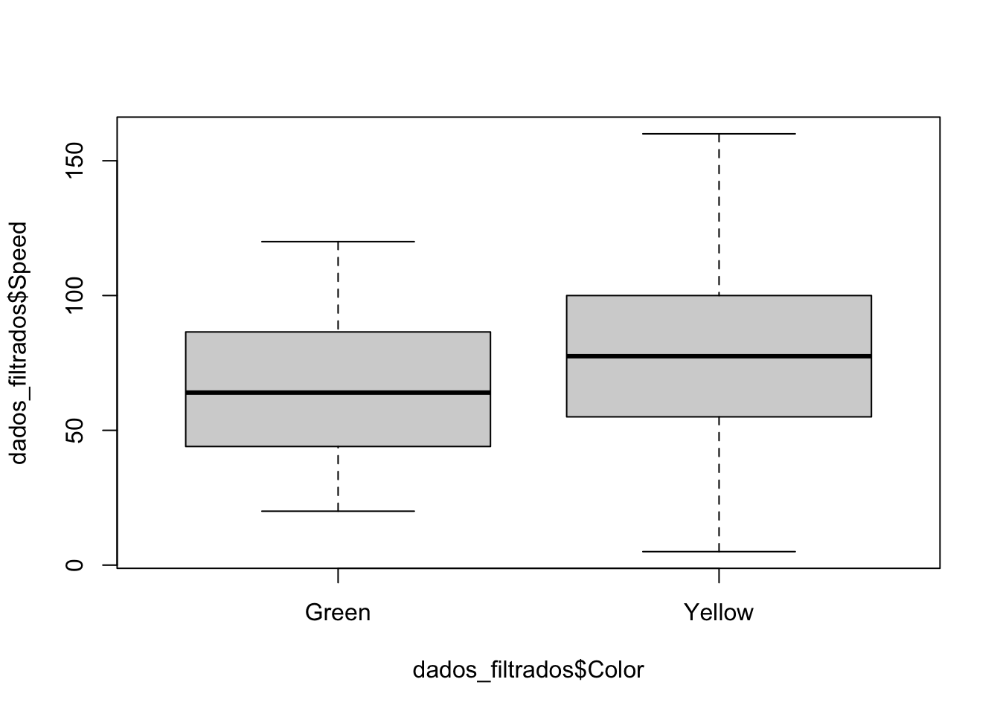

Capítulo 23 Pacotes pwr, rstatix e effsize
Nesse capítulo, abordaremos como calcular tamanho de amostra, poder estatístico e tamanho do efeito em diferentes testes estatísticos usando os pacotes pwr, rstatix e effsize. O foco será nos testes t (pareado e não pareado) e Wilcoxon (pareado e não pareado), com exemplos práticos e orientações sobre interpretação dos resultados.
Importante: Antes de começar, certifique-se de instalar o pacote
pwr,rstatixeeffsize:
23.1 Cálculos de tamanho de amostra, poder e efeito com o pacote pwr
O pacote pwr permite calcular:
- Tamanho de amostra necessário para detectar um determinado efeito;
- Poder estatístico de um teste para amostras de tamanho fixo;
- Menor tamanho de efeito que pode ser detectado para um dado poder e amostra.
23.1.1 Exercício 1: Tamanho da amostra para teste t não pareado
Calcule o tamanho da amostra necessário para detectar um efeito moderado (d = 0.5), com poder de 0.8 e nível de significância de 0.05, em um teste t bilateral para duas amostras independentes.
library(pwr)
# Tamanho da amostra para teste t não pareado
pwr.t.test(d = 0.5, power = 0.8, sig.level = 0.05, type = "two.sample")##
## Two-sample t test power calculation
##
## n = 63.76561
## d = 0.5
## sig.level = 0.05
## power = 0.8
## alternative = two.sided
##
## NOTE: n is number in *each* group23.1.2 Exercício 2: Poder do teste t não pareado para n fixo
Se você dispõe de 26 observações em cada grupo, qual é o poder do teste para detectar um efeito de 0.5, com sig.level = 0.05?
# Poder do teste t não pareado para n = 26 por grupo
pwr.t.test(n = 26, d = 0.5, sig.level = 0.05, type = "two.sample")##
## Two-sample t test power calculation
##
## n = 26
## d = 0.5
## sig.level = 0.05
## power = 0.4240344
## alternative = two.sided
##
## NOTE: n is number in *each* group23.1.3 Exercício 3: Menor efeito detectável no teste t não pareado
Com 26 observações por grupo, poder de 0.8 e sig.level de 0.05, qual o menor tamanho de efeito detectável?
# Tamanho do efeito detectável
pwr.t.test(n = 26, power = 0.8, sig.level = 0.05, type = "two.sample")##
## Two-sample t test power calculation
##
## n = 26
## d = 0.7923522
## sig.level = 0.05
## power = 0.8
## alternative = two.sided
##
## NOTE: n is number in *each* group23.1.4 Exercício 4: Repita para outros testes
23.1.4.1 a) Teste t pareado
# Tamanho da amostra para teste t pareado
pwr.t.test(d = 0.5, power = 0.8, sig.level = 0.05, type = "paired")##
## Paired t test power calculation
##
## n = 33.36713
## d = 0.5
## sig.level = 0.05
## power = 0.8
## alternative = two.sided
##
## NOTE: n is number of *pairs*##
## Paired t test power calculation
##
## n = 26
## d = 0.5
## sig.level = 0.05
## power = 0.6881801
## alternative = two.sided
##
## NOTE: n is number of *pairs*##
## Paired t test power calculation
##
## n = 26
## d = 0.5717051
## sig.level = 0.05
## power = 0.8
## alternative = two.sided
##
## NOTE: n is number of *pairs*23.1.4.2 b) Wilcoxon não pareado
# Tamanho da amostra para Wilcoxon não pareado (aproximação pelo teste t)
pwr.t.test(d = 0.5, power = 0.8, sig.level = 0.05, type = "two.sample")##
## Two-sample t test power calculation
##
## n = 63.76561
## d = 0.5
## sig.level = 0.05
## power = 0.8
## alternative = two.sided
##
## NOTE: n is number in *each* groupDica: O pacote
pwrnão possui funções específicas para testes não-paramétricos como Wilcoxon. Por isso, costuma-se usar o cálculo para teste t como aproximação, aumentando o tamanho da amostra em cerca de 15% (multiplique o valor obtido por 1,15), já que testes não-paramétricos geralmente requerem amostras maiores para o mesmo poder estatístico.
## [1] 73.33045O tamanho do efeito para o teste de Wilcoxon pode ser aproximado por d × 0,86, sendo d o tamanho do efeito de Cohen, desde que as distribuições dos grupos sejam aproximadamente normais e com variâncias semelhantes (Lehmann, 2006; Noether, 1987).
# Poder da amostra para Wilcoxon não pareado (aproximação pelo teste t)
pwr.t.test(n = 26, d = 0.5*0.86, sig.level = 0.05, type = "two.sample")##
## Two-sample t test power calculation
##
## n = 26
## d = 0.43
## sig.level = 0.05
## power = 0.3304646
## alternative = two.sided
##
## NOTE: n is number in *each* group23.1.4.3 c) Wilcoxon pareado
# Tamanho da amostra para Wilcoxon pareado (aproximação pelo teste t pareado)
pwr.t.test(d = 0.5, power = 0.8, sig.level = 0.05, type = "paired")##
## Paired t test power calculation
##
## n = 33.36713
## d = 0.5
## sig.level = 0.05
## power = 0.8
## alternative = two.sided
##
## NOTE: n is number of *pairs*# Poder da amostra para Wilcoxon não pareado (aproximação pelo teste t)
pwr.t.test(n = 26, d = 0.5*0.86, sig.level = 0.05, type = "two.sample")##
## Two-sample t test power calculation
##
## n = 26
## d = 0.43
## sig.level = 0.05
## power = 0.3304646
## alternative = two.sided
##
## NOTE: n is number in *each* groupAtenção: O d de Cohen foi criado para testes paramétricos, como o teste t. Para testes não paramétricos (Wilcoxon), utilize medidas específicas, pois a interpretação do d não se aplica ao contexto de ranks.
23.1.5 Argumentos principais da função pwr.t.test()
A função pwr.t.test() possui os seguintes argumentos principais:
n: tamanho da amostra em cada grupo (ou número de pares, para teste pareado)d: tamanho do efeito (diferença padronizada entre grupos)power: poder estatístico desejadosig.level: nível de significância (geralmente 0.05)type: tipo de teste t:"two.sample","paired"ou"one.sample"
Dica: Deixe como
NULLo parâmetro que você deseja calcular. - Para calcular o tamanho do efeito:d = NULL- Para calcular o poder:power = NULL- Para calcular o tamanho da amostra:n = NULL
Exemplo para calcular o tamanho do efeito:
Neste exemplo, o argumento d é o valor a ser calculado.
23.1.6 Grupos Desbalanceados: usando pwr.t2n.test()
Quando os grupos têm tamanhos diferentes, use pwr.t2n.test() para calcular o poder.
# Exemplo: grupo 1 com 95, grupo 2 com 30 observações
library(pwr)
pwr.t2n.test(n1 = 95, n2 = 30, d = 0.5, sig.level = 0.05)##
## t test power calculation
##
## n1 = 95
## n2 = 30
## d = 0.5
## sig.level = 0.05
## power = 0.6586749
## alternative = two.sided- n1: tamanho do primeiro grupo
- n2: tamanho do segundo grupo
Atenção: Grupos desbalanceados podem comprometer o poder do teste, aumentar a variância e dificultar a interpretação dos resultados. Sempre que possível, busque amostras equilibradas.
23.2 Tamanho do efeito em testes de Wilcoxon
O tamanho do efeito complementa a análise estatística, indicando a magnitude da diferença entre grupos. Para testes paramétricos (como o t), usa-se o d de Cohen. Para testes não paramétricos (Wilcoxon), utilize medidas apropriadas, como r de Wilcoxon e Delta de Cliff.
23.2.1 Por que NÃO usar d de Cohen no Wilcoxon?
- O d de Cohen pressupõe distribuição normal e comparação direta de médias/desvios.
- O Wilcoxon compara ranks, não médias.
- Aplicar o d de Cohen em dados de Wilcoxon pode gerar interpretações erradas.
23.2.2 Medidas recomendadas para Wilcoxon:
- r de Wilcoxon: Calculado com o pacote
rstatix. - Cliff’s Delta: Disponível no pacote
effsize.
23.2.2.1 r de Wilcoxon (Wilcoxon rank-sum, não pareado)
library(rstatix)
library(readr)
# Importe o banco de dados Pokemon
Pokemon <- read_csv("Pokemon.csv")
# Subconjunto com Pokémons verdes ou amarelos
dados_filtrados <- subset(Pokemon, Color %in% c("Green", "Yellow"))
# Verifique os dados após o filtro
print(table(dados_filtrados$Color))##
## Green Yellow
## 79 64
##
## Wilcoxon rank sum test with continuity correction
##
## data: dados_filtrados$Speed by dados_filtrados$Color
## W = 1920.5, p-value = 0.01363
## alternative hypothesis: true location shift is not equal to 0# Tamanho do efeito r de Wilcoxon para Green vs Yellow
wilcox_effsize(dados_filtrados, Speed ~ Color)## # A tibble: 1 × 7
## .y. group1 group2 effsize n1 n2 magnitude
## * <chr> <chr> <chr> <dbl> <int> <int> <ord>
## 1 Speed Green Yellow 0.206 79 64 small## NULLA tabela apresentada é resultado da função wilcox_effsize() do pacote rstatix e resume o tamanho do efeito (r de Wilcoxon) para a comparação entre dois grupos (“Green” e “Yellow”) em relação à variável “Speed”. Veja como interpretar cada coluna:
- .y.: variável de interesse analisada, neste caso, “Speed” (velocidade dos Pokémons).
- group1: primeiro grupo comparado (“Green”).
- group2: segundo grupo comparado (“Yellow”).
- effsize: valor ABSOLUTO do tamanho de efeito calculado, aqui 0.206.
- O resultado apresentado na coluna
effsizeé sempre positivo, independentemente da ordem dos grupos definidos na variável categórica. - n1: número de observações no grupo 1 (79 Pokémons verdes).
- n2: número de observações no grupo 2 (64 Pokémons amarelos).
- magnitude: classificação qualitativa do tamanho de efeito (“small”, ou seja, efeito pequeno).
Interpretação:
A diferença de velocidade entre Pokémons verdes e amarelos é estatisticamente significativa (W = 1920.5, p-value = 0.01363), porém de pequena magnitude (r = 0.206). Isso indica que, embora exista uma diferença, ela é discreta do ponto de vista prático.
No caso de teste pareado, acrescente o argumento
paired = TRUE:
23.2.2.2 Delta de Cliff
library(effsize)
# Calcule o Delta de Cliff
cliff.delta(dados_filtrados$Speed ~ dados_filtrados$Color)##
## Cliff's Delta
##
## delta estimate: -0.2403085 (small)
## 95 percent confidence interval:
## lower upper
## -0.41405995 -0.04966082O Delta de Cliff estimado foi de -0,24, classificado como efeito pequeno (“small”). O intervalo de confiança de 95% vai de aproximadamente -0,41 a -0,05, indicando que, com alta confiança, o efeito verdadeiro é negativo e pequeno.
- Sinal negativo: Indica que o grupo “Yellow” tende a apresentar velocidades maiores do que o grupo “Green”. Ou seja, ao comparar aleatoriamente um Pokémon amarelo com um verde, é mais provável que o amarelo tenha uma velocidade superior.
- Magnitude pequena: O valor absoluto de -0,24 mostra que a diferença entre os grupos existe, mas é de pouca relevância prática.
- Intervalo de confiança não inclui zero: Como o intervalo vai de -0,41 a -0,05, podemos afirmar que existe uma diferença real entre os grupos, embora seja pequena.
- Interpretação prática: Apesar de haver uma diferença estatística, ela não é marcante. É importante avaliar se essa diferença tem relevância biológica ou prática no contexto do seu estudo.
O Delta de Cliff indica que Pokémons amarelos tendem a ser um pouco mais rápidos do que os verdes, mas a diferença é pequena do ponto de vista prático.
23.2.3 Comparação entre o r de Wilcoxon e o Delta de Cliff
Quando realizamos testes não paramétricos para comparar grupos, como o teste de Wilcoxon (Mann-Whitney ou Wilcoxon pareado), é importante complementar o resultado do teste com uma medida de tamanho de efeito. As duas opções mais comuns são o r de Wilcoxon e o Delta de Cliff. Veja a seguir uma comparação entre elas:
23.2.4 r de Wilcoxon
- Definição: Mede a magnitude da diferença entre grupos com base nos postos (ranks) dos dados. O cálculo é semelhante ao coeficiente de correlação de Pearson, mas aplicado a dados não paramétricos.
- Variação dos valores: O r de Wilcoxon varia de -1 a 1.
- Valores próximos de 0 indicam pouca diferença entre grupos.
- Valores próximos de -1 ou 1 indicam diferenças muito grandes.
- O sinal indica a direção da diferença.
Qualificação dos valores, segundo Cohen (1988):
| Valor absoluto de \(r\) | Interpretação |
|---|---|
| aproximadamente 0,10 | Pequeno |
| aproximadamente 0,30 | Moderado |
| maior ou igual 0,50 | Grande |
Exemplos:
Efeito pequeno:
Se o valor absoluto de r estiver próximo de 0,10, a diferença entre os grupos é pequena.
(Exemplo: |r| = 0,10 → efeito pequeno)Efeito moderado:
Se o valor absoluto de r estiver próximo de 0,30, a diferença entre os grupos é moderada.
(Exemplo: |r| = 0,30 → efeito moderado)Efeito grande:
Se o valor absoluto de r for igual ou superior a 0,50, a diferença é grande.
(Exemplo: |r| = 0,55 → efeito grande)
23.2.5 Delta de Cliff (\(\delta\))
- Definição: Mede a probabilidade de um valor de um grupo ser maior do que de outro grupo, subtraída da probabilidade contrária. É totalmente não paramétrico e não depende de distribuição, sendo adequado para variáveis ordinais ou dados assimétricos.
- Variação dos valores: O Delta de Cliff varia de -1 a 1.
- Valor 0: não há diferença entre os grupos.
- Valor positivo: o grupo 1 tende a ter valores maiores que o grupo 2.
- Valor negativo: o grupo 2 tende a ter valores maiores que o grupo 1.
- Como interpretar os valores do Delta de Cliff?
O Delta de Cliff mostra o tamanho da diferença entre dois grupos. O mais comum é considerar o valor absoluto de \(\delta\) (ou seja, ignorar se é positivo ou negativo e olhar só para o tamanho do número).
Classificação da magnitude do efeito, segundo Romano et al. (2006)
| Valor absoluto de \(\delta\) | Interpretação |
|---|---|
| menor que 0.147 | Desprezível |
| de 0.147 e menor que 0.33 | Pequeno |
| de 0.33 e menor que 0.474 | Médio |
| maior ou igual a 0.474 | Grande |
Exemplos:
Efeito desprezível:
Se o valor absoluto do delta for menor que 0,147, a diferença entre os grupos é desprezível.
(Exemplo: |\(\delta\)| = 0,10 → efeito desprezível)Efeito pequeno:
Se o valor absoluto do delta for igual ou maior que 0,147 e menor que 0,33, a diferença é pequena.
(Exemplo: |\(\delta\)| = 0,20 → efeito pequeno)Efeito médio:
Se o valor absoluto do delta for igual ou maior que 0,33 e menor que 0,474, a diferença é média.
(Exemplo: |\(\delta\)| = 0,40 → efeito médio)Efeito grande:
Se o valor absoluto do delta for igual ou maior que 0,474, a diferença é grande.
(Exemplo: |\(\delta\)| = 0,50 → efeito grande)
Resumindo:
Quanto mais próximo de zero, menor a diferença. Quanto mais próximo de 1 (ou -1), maior a diferença entre os grupos.
Dica: Sempre use o valor absoluto, ou seja, olhe apenas para o tamanho do número, sem se preocupar se ele é positivo ou negativo.
23.2.6 Qual é melhor usar?
- Ambos são válidos e amplamente aceitos para dados não paramétricos.
- O r de Wilcoxon é intuitivo se você já está acostumado com o coeficiente de correlação, e é facilmente interpretável em contextos onde se deseja uma analogia ao r de Pearson.
- O Delta de Cliff é mais robusto em situações com muitos empates, diferentes tamanhos de grupo ou dados ordinais, e fornece uma interpretação mais direta da diferença de probabilidades entre grupos.
- Recomendação prática:
- Para estudos com dados ordenados, amostras desbalanceadas ou muitos empates, o Delta de Cliff pode ser preferido.
- Se você busca uma medida análoga ao r de Pearson para facilitar comparações, use o r de Wilcoxon.
- Em muitos casos, apresentar ambos os valores enriquece a interpretação dos resultados.
Não existe uma medida “melhor” de forma absoluta; a escolha depende do contexto do estudo e das características dos dados. Ambas são úteis para interpretar a relevância prática das diferenças identificadas em testes não paramétricos.
Nota: Para a comparação entre os grupos Green e Yellow na variável Speed, o tamanho de efeito calculado pelo r de Wilcoxon foi 0,206 (efeito pequeno), enquanto o delta de Cliff foi -0,240 (efeito pequeno, IC 95%: -0,414 a -0,050). É esperado que os valores numéricos dessas métricas diferem, pois são baseados em cálculos estatísticos distintos, mas ambos apontam para uma diferença de pequena magnitude entre os grupos.
No entanto, é importante destacar que, neste caso, o valor negativo do delta de Cliff está condizente com o observado no boxplot: o grupo Yellow tende a apresentar valores de Speed ligeiramente maiores que o grupo Green, o que é evidenciado pela direção negativa do delta.
Esse alinhamento entre o resultado numérico do delta de Cliff e a visualização gráfica reforça a importância de sempre analisar os dados de forma complementar, utilizando tanto medidas estatísticas quanto representações visuais (como boxplots). A visualização gráfica pode revelar padrões, tendências e assimetrias que enriquecem a interpretação do tamanho de efeito e facilitam a comunicação dos resultados.